| 5 | 5 | 8 | 8 | 12 | 23 | 27 | 30 | 33 | 43 | 45 |
Chapter 3
(AST305) Lifetime Data Analysis I
3 Some Nonparametric and Graphical Procedures
3.1 Introduction
Graphs and simple data summaries are important for both description and analysis of data.
They are closely related to nonparametric estimates of distributional characteristics; many graphs are just plots of some estimate.
This chapter introduces nonparametric estimation and procedures for portraying univariate lifetime data.
Tools such as frequency tables and histograms, empirical distribution functions, probability plots, and data density plots are familiar across different branches of statistics.
For lifetime data, the presence of censoring makes it necessary to modify the standard methods.
To illustrate, let us consider one of the most elementary procedures in statistics, the formation of a relative-frequency table.
Suppose we have a complete (i.e., uncensored) sample of \(n\) lifetimes from some population.
Divide the time axis \([0, \infty)\) into \(k+1\) intervals \(I_j=\left[a_{j-1}, a_j\right), j=1, \ldots, k+1\), where \(0=a_0<a_1<\ldots<a_k<a_{k+1}=\infty\); with \(a_k\) being the upper limit on observation.
Let \(d_j\) be the observed number of lifetimes that lie in \(I_j\).
A frequency table is just a list of the intervals and their associated frequencies, \(d_j\), or relative frequencies, \(d_j / n\).
A relative-frequency histogram, consisting of rectangles with bases on \(\left[a_{j-1}, a_j\right.\) ) and areas \(d_j / n(j=1, \ldots, k)\); is often drawn to portray this.
When data are censored, however, it is generally not possible to form the frequency table, because if a lifetime is censored, we do not know which interval, \(I_j\), it lies in. As a result, we cannot determine the \(d_j\).
Section 3.6 describes how to deal with frequency tables when data are censored; this is referred to as life table methodology.
First, however, we develop methods for ungrouped data.
-
Section 3.2 discusses nonparametric estimation of distribution, survivor, or cumulative hazard functions under right censoring.
- This also forms the basis for descriptive and diagnostic plots, which are presented in Section 3.3.
Sections 3.4 and 3.5 deal with the estimation of hazard functions and with nonparametric estimation from some other types of incomplete data.
3.2 Nonparametric Estimation of a Survivor Function and Quantiles
Recall: Parametric estimation of survivor function
This method assumes a parametric model (e.g., exponential distribution) of the data and we estimate the parameter first, then form the estimator of the survival function. In Parametric approach, we assume that we model the distribution as an exponential distribution with unknown parameter \(\lambda\). Then we find an estimator of \(\lambda\), which is \(\widehat{\lambda}\). Then we estimate the survival function using \[ \widehat{S}(t)= e^{-\widehat{\lambda} t} \]
Nonparametric estimation of a survivor function
- As an example, consider the following sample of \(n\) complete observations \[\{t_1', \ldots, t_n'\}\]
-
Empirical survivor function (ESF) for a specific value \(t>0\) is defined as \[\begin{align} {\color{purple}\hat{S}(t)=\widehat{Pr}(T\geqslant t) =\frac{\text{number of observations $\geqslant\; t$ }}{n}} \end{align}\]
\(\hat{S}(t)\) is a step function that decreases by \((1/n)\) just after each observed lifetime if all observations are distinct
Generally, the ESF drops by \((d/n)\) just past \(t\) if \(d\) lifetimes equal to \(t\)
For a specific value \(t>0\), ESF can also be defined as \[\begin{align} {\color{purple} \hat{S}(t^+)=\widehat{Pr}(T>t) = \frac{\text{number of observations $>\; t$ }}{n}} \end{align}\]
Acute myeloid leukemia (AML)
-
AML patients who reached a remission status after the treatment of chemotherapy were randomly assigned to one of the two treatments
maintenance chemotherapy
no-maintenance chemotherapy (control group)
-
Time of interest: Length of remission (in weeks)
maintained: 13, \(161^+\), 9, \(13^+\), 18, \(28^+\), 31, 23, 34, \(45^+\), 48
control: 5, 8, 12, 5, 30, 33, 8, \(16^+\), 23, 27, 43, 45
Does maintenance chemotherapy prolong the time until relapse?
- Estimate the survival function for the following sample of 11 complete observations of control group (\(n=11\))
- Estimates of survival function for \(t=0, 4, 5, 8, \ldots\) \[
\begin{aligned}
\hat{S}(0^+) & = \widehat{Pr}(T > 0) = (11 /{11}) = 1\\[.25em]
\hat{S}(5^+) & = \widehat{Pr}(T > 5) = (9 /{11}) = 0.818\\[.25em]
\hat{S}(8^+) & = \widehat{Pr}(T> 8) = (7 /{11}) = 0.636\\[.25em]
\hat{S}(12^+) & = \widehat{Pr}(T> 12) = (6/{11}) = 0.545\;\;\text{and so on}
\end{aligned}
\]
- Find \(\hat{S}(9)\) or \(\hat{S}(9^+)\)
Sorted lifetimes \[5, \,5, \,8, \,8,\, 12,\, 23,\, 27,\, 30,\, 33,\, 43,\, 45\]
- Estimated survivor function \[\begin{align} {\color{purple} \hat{S}(t^+_j) = \frac{r_{j}}{n}} \end{align}\]
\[ \begin{aligned} r_{j}= \sum_{i=1}^n I(t_i'>t_j)\,&\rightarrow \;\text{number of observations}\; >\,t_j\\[.25em] n\,&\rightarrow \;\text{total number of observations} \end{aligned} \]
| \(t_j\) | \(r_j\) | \(\hat{S}(t^+_j)\) |
|---|---|---|
| 0 | 11 | 1.000 |
| 5 | 9 | 0.818 |
| 8 | 7 | 0.636 |
| 12 | 6 | 0.545 |
| 23 | 5 | 0.455 |
| 27 | 4 | 0.364 |
| 30 | 3 | 0.273 |
| 33 | 2 | 0.182 |
| 43 | 1 | 0.091 |
| 45 | 0 | 0.000 |
Nonparametric estimate of survivor function (Empirical Survivor Function - ESF)
Exercise
The following are lifetimes of 21 lung cancer patients receiving control treatment (with no censoring): \[ 1,1,2,2,3,4,4,5,5,8,8,8,8,11,11,12,12,15,17,22,23 \]
Draw the ESF
How would we estimate \(\mathrm{S}(10)\), the probability that an individual survives to time 10 or later?
Let’s get back to the AML example:
Sorted lifetimes: \(5, \,5, \,8, \,8,\, 12,\, 23,\, 27,\, 30,\, 33,\, 43,\, 45\)
| \(t_j\) | \(n_j\) | \(d_j\) | \(\hat{S}(t^+_j)\) |
|---|---|---|---|
| 0 | 11 | 0 | 1.000 |
| 5 | 11 | 2 | 0.818 |
| 8 | 9 | 2 | 0.636 |
| 12 | 7 | 1 | 0.545 |
| 23 | 6 | 1 | 0.455 |
| 27 | 5 | 1 | 0.364 |
| 30 | 4 | 1 | 0.273 |
| 33 | 3 | 1 | 0.182 |
| 43 | 2 | 1 | 0.091 |
| 45 | 1 | 1 | 0.000 |
\[ \begin{aligned} n_j & = \text{number of subjects alive (or at risk) just before time}\,\, t_j \\ d_j & = \text{number of subjects failed at time}\,\, t_j \end{aligned} \]
| \(t_j\) | \(n_j\) | \(d_j\) | \(\hat{p}_j\) | \(\hat{S}(t^+_j)\) |
|---|---|---|---|---|
| 0 | 11 | 0 | 1.000 | 1.000 |
| 5 | 11 | 2 | 0.818 | 0.818 |
| 8 | 9 | 2 | 0.778 | 0.636 |
| 12 | 7 | 1 | 0.857 | 0.545 |
| 23 | 6 | 1 | 0.833 | 0.455 |
| 27 | 5 | 1 | 0.800 | 0.364 |
| 30 | 4 | 1 | 0.750 | 0.273 |
| 33 | 3 | 1 | 0.667 | 0.182 |
| 43 | 2 | 1 | 0.500 | 0.091 |
| 45 | 1 | 1 | 0.000 | 0.000 |
\[ \begin{aligned} {\color{purple}\hat{p}_j} & {\color{purple}= \widehat{Pr}(T > t_j\,\vert \,T \geq t_j)} \\ &= 1 - \frac{d_j}{n_j}\notag \end{aligned} \]
Relationship between \(\hat{p}_j\) and \(\hat{S}(t_j^+)\)
| \(t_j\) | \(n_j\) | \(d_j\) | \(\hat{p}_j\) | \(\hat{S}(t^+_j)\) | |
|---|---|---|---|---|---|
| 0 | 11 | 0 | 1.000 | 1.000 = | 1.000 |
| 5 | 11 | 2 | 0.818 | 1.000*0.818 = | 0.818 |
| 8 | 9 | 2 | 0.778 | 1.0000.8180.778 = | 0.636 |
| 12 | 7 | 1 | 0.857 | ’’ | 0.545 |
| 23 | 6 | 1 | 0.833 | ’’ | 0.455 |
| 27 | 5 | 1 | 0.800 | ’’ | 0.364 |
| 30 | 4 | 1 | 0.750 | ’’ | 0.273 |
| 33 | 3 | 1 | 0.667 | ’’ | 0.182 |
| 43 | 2 | 1 | 0.500 | ’’ | 0.091 |
| 45 | 1 | 1 | 0.000 | ’’ | 0.000 |
- Sorted unique lifetimes \[5, \; 8, \;12, \; 23, \;27, \;30, \;33, \; 43, \;45\]
\[ \begin{aligned} P(T>8) & = P(T>8\,\vert\, T\geq 8) {\color{red}P(T\geq 8)} \\[.15em] & = P(T>8\,\vert\, T\geq 8) {\color{red}P(T> 5)}\\[.15em] & = P(T>8\,\vert\, T\geq 8) P(T> 5\,\vert\,T\geq 5) P(T\geq 5)\\[.15em] & = P(T>8\,\vert\, T\geq 8) P(T> 5\,\vert\,T\geq 5) P(T\geq 0)\\[.15em] & = 0.778 \times 0.818 \times 1.0 = 0.636 \end{aligned} \]
- Sorted unique lifetimes \[5, \; 8, \;12, \; 23, \;27, \;30, \;33, \; 43, \;45\]
\[ \begin{aligned} P(T>10) & = P(T>10\,\vert\, T\geq 10) {\color{red}P(T\geq 10)} \\[.15em] & = P(T>10\,\vert\, T\geq 10) {\color{red}P(T> 8)}\\[.15em] & = P(T>10\,\vert\, T\geq 10) P(T> 8\,\vert\,T\geq 8) P(T\geq 8)\\[.15em] & = P(T>10\,\vert\, T\geq 10) P(T> 8\,\vert\,T\geq 8) P(T> 5\,\vert\,T\geq 5) P(T\geq 0)\\[.15em] & = 1.0\times 0.778 \times 0.818 \times 1.0 = 0.636 \end{aligned} \]
| \(t_j\) | \(n_j\) | \(d_j\) | \(\hat{p}_j\) | \(\hat{S}(t^+)\) | \(I_j\) | |
|---|---|---|---|---|---|---|
| 0 | 11 | 0 | 1.000 | 1.000 = | 1.000 | [0, 5) |
| 5 | 11 | 2 | 0.818 | 1.000*0.818 = | 0.818 | [5, 8) |
| 8 | 9 | 2 | 0.778 | 1.0000.8180.778 = | 0.636 | [8, 12) |
| 12 | 7 | 1 | 0.857 | ’’ | 0.545 | [12, 23) |
| 23 | 6 | 1 | 0.833 | ’’ | 0.455 | [23, 27) |
| 27 | 5 | 1 | 0.800 | ’’ | 0.364 | [27, 30) |
| 30 | 4 | 1 | 0.750 | ’’ | 0.273 | [30, 33) |
| 33 | 3 | 1 | 0.667 | ’’ | 0.182 | [33, 43) |
| 43 | 2 | 1 | 0.500 | ’’ | 0.091 | [43, 45) |
| 45 | 1 | 1 | 0.000 | ’’ | 0.000 | [45, Inf) |
Notations:
Observed times: \(\;\;t_1', t_2', \ldots, t_n'\)
Ordered observed unique time points: \(\;\; t_{1} < t_{2} < \cdots < t_{k}\)
Intervals \[ \begin{aligned} I_1 &= \big[t_{1}, t_{2}\big) \\ I_2 &= \big[t_{2}, t_{3}\big) \\ I_3 &= \big[t_{3}, t_{4}\big) \\ \;\;\cdots & \;\;\;\;\;\;\;\;\;\;\cdots \\ I_{k} & = \big[t_{k}, \infty\big) \end{aligned} \]
-
Intervals are constructed so that each of which starts at an observed lifetime and ends just before the next observed lifetime
- E.g. \(I_j = [t_{j}, t_{j+1})\)
- Sorted unique lifetimes \[5, \; 8, \;12, \; 23, \;27, \;30, \;33, \; 43, \;45\]
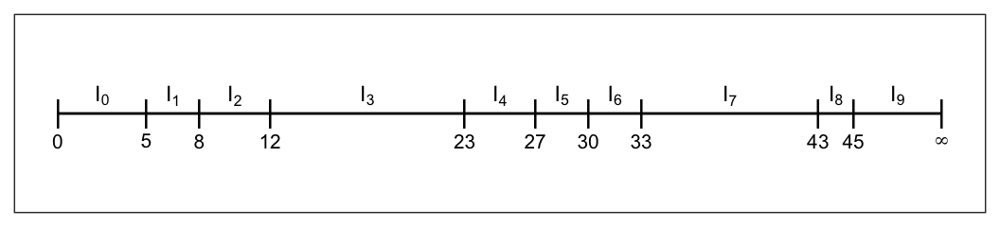
-
Expressing \(\hat{S}(t)\) in terms of \(\hat{p}\) \[ \begin{aligned} \hat{S}(t^+) &= \widehat{Pr}(T> t) = \prod_{{\color{purple}t_j \leqslant t}} \hat{p}_j \\[.25em] \hat{S}(t) &= \widehat{Pr}(T\geqslant t) = \prod_{{\color{purple}t_j < t}} \hat{p}_j \end{aligned} \] This method is known as Kaplan-Meier or Product-limit estimator of survivor function.
- We saw that this method is equivalent to the ESF approach:
\[ \begin{aligned} {\color{purple} \hat{S}(t^+)=\widehat{Pr}(T>t) = \frac{\text{number of observations > t }}{n}} \end{aligned} \]
- But the advantage of Kaplan-Meier method is that it can handle censored observations too.
Censored sample
If we had censored data, then?
For the control group of AML example, now include the censored observation \({\color{purple}16^+}\).
\[5, 8, 12, 5, 30, 33, 8, {\color{purple}16^+}, 23, 27, 43, 45\]
- \(\hat{S}(t) = ??\)
- Censored sample: \(5, \,8,\, 12,\, 5,\, 30,\, 33,\, 8,\, 16^+,\, 23,\, 27,\, 43,\, 45\)
- Sorted censored sample \[5, \, 5, \,8,\, 8,\, 12,\, 16^+,\, 23,\, 27,\, 30,\, 33,\, 43,\, 45\]
| \(t_j\) | \(n_j\) | \(d_j\) |
|---|---|---|
| 5 | 12 | 2 |
| 8 | 10 | 2 |
| 12 | 8 | 1 |
| 16 | 7 | 0 |
| 23 | 6 | 1 |
| 27 | 5 | 1 |
| 30 | 4 | 1 |
| 33 | 3 | 1 |
| 43 | 2 | 1 |
| 45 | 1 | 1 |
\[{\color{purple} \hat{p}_j = \widehat{Pr}(T> t_j\,\vert\, T\geq t_j) = 1 - \frac{d_j}{n_j}}\]
| \(t_j\) | \(n_j\) | \(d_j\) | \(\hat{p}_j\) |
|---|---|---|---|
| 5 | 12 | 2 | 0.833 |
| 8 | 10 | 2 | 0.800 |
| 12 | 8 | 1 | 0.875 |
| 16 | 7 | 0 | 1.000 |
| 23 | 6 | 1 | 0.833 |
| 27 | 5 | 1 | 0.800 |
| 30 | 4 | 1 | 0.750 |
| 33 | 3 | 1 | 0.667 |
| 43 | 2 | 1 | 0.500 |
| 45 | 1 | 1 | 0.000 |
\[{\color{purple} \hat{S}(t^+) = \prod_{j:\,t_j\leq t} \hat{p}_j}\]
| \(t_j\) | \(n_j\) | \(d_j\) | \(\hat{p}_j\) | \(\hat{S}(t_j^+)\) |
|---|---|---|---|---|
| 5 | 12 | 2 | 0.833 | 0.833 |
| 8 | 10 | 2 | 0.800 | 0.667 |
| 12 | 8 | 1 | 0.875 | 0.583 |
| 16 | 7 | 0 | 1.000 | 0.583 |
| 23 | 6 | 1 | 0.833 | 0.486 |
| 27 | 5 | 1 | 0.800 | 0.389 |
| 30 | 4 | 1 | 0.750 | 0.292 |
| 33 | 3 | 1 | 0.667 | 0.194 |
| 43 | 2 | 1 | 0.500 | 0.097 |
| 45 | 1 | 1 | 0.000 | 0.000 |
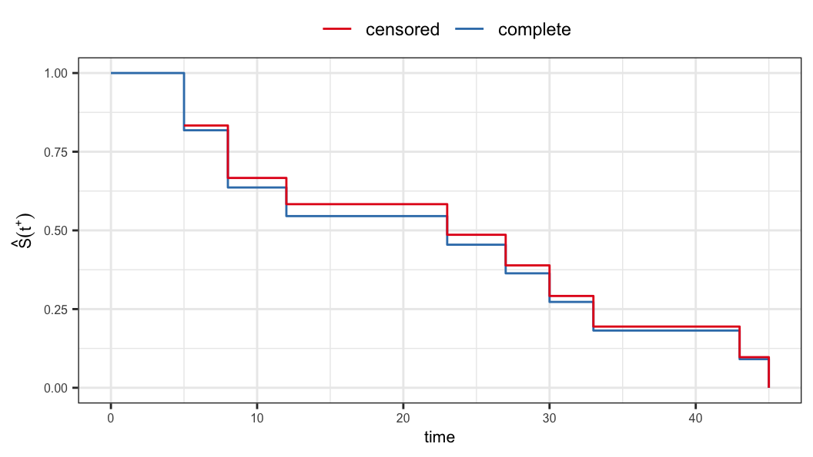
Kaplan-Meier estimator
Kaplan-Meier estimator
Let \((t_i', \delta_i)\) be a censored random sample of lifetimes \(i=1, \ldots, n\)
Suppose that there are \(k\) \((k\leq n)\) distinct lifetimes at which deaths (event) occurs \[t_1< \cdots <t_k\]
-
Define for \(j\)th time \(j=1,\ldots, k\)
- \(d_j=\sum_i I(t'_i=t_j, \delta_i=1) \rightarrow\) no. of deaths observed at \(t_j\)
- \(n_j=\sum_i I(t'_i \geq t_j)\,\rightarrow\) no. of individuals at risk at time \(t_j\), i.e. number of individuals alive and uncensored just prior time \(t_j\)
A nonparametric estimator of survivor function \(S(t)\) \[\begin{align} {\color{purple} \hat{S}(t) = \prod_{j:\,t_j<t} \hat{p}_j= \prod_{j:\,t_j<t}\bigg(1-\frac{d_j}{n_j}\bigg) = \prod_{j:\,t_j<t}\frac{n_j-d_j}{n_j}} \end{align}\]
It is known as Kaplan-Meier (KM) or Product-limit (PL) estimator of survivor function (Kaplan and Meier 1958)
Similarly \[\begin{align} \hat{S}(t^+) = \prod_{{\color{purple} j:\,t_j\leqslant t}} \hat{p}_j \end{align}\]
The paper was published in the Journal of the American Statistical Association in 1958
Number of citations 68,242 (Google Scholar, 27 September 2025)
Edward L Kaplan (1920–2006)
Paul Meier (1924–2011)
Kaplan–Meier estimator as an MLE
We only look at event times where at least one failure occurs.
Let the ordered distinct event times be
\(t_{1} < t_{2} < \cdots < t_{k}\).-
At each event time \(t_{j}\):
-
\(d_j\) = number of failures that happen exactly at \(t_{j}\)
-
\(n_j\) = number at risk just before \(t_{j}\)
(alive and not yet censored, and have not failed earlier)
-
\(d_j\) = number of failures that happen exactly at \(t_{j}\)
Discrete hazard at the event time \[ h_j \;=\; P\!\big(T = t_{j} \mid T \ge t_{j}\big). \] This is the conditional chance that someone who has survived up to \(t_{j}\) fails at \(t_{j}\).
Likelihood at the event times
Given \(n_j\) people at risk at \(t_{j}\), each either fails at \(t_{j}\) or survives past \(t_{j}\).
If the conditional probability of failing at \(t_{j}\) is \(h_j\), then \[
d_j \sim \text{Binomial}(n_j,\, h_j).
\]
Across the distinct event times the contributions multiply, so the likelihood is \[ L(\mathbf{h}) \;=\; \prod_{j=1}^{k} h_j^{\,d_j}\,(1-h_j)^{\,n_j-d_j}, \] where \(\mathbf{h}=(h_1,\ldots,h_k)\).
MLE of the discrete hazards
Maximizing each binomial term separately gives \[ \hat{h}_j \;=\; \frac{d_j}{n_j}, \qquad j=1,\ldots,k. \]
From hazards to the survivor function
The survivor function at a time \(t\) is the chance of getting past \(t\).
Between event times the survivor is constant. Just after \(t_{j}\) it equals the product of “survive this event time” factors: \[
\hat{S}(t) \;=\; \prod_{t_{j} < t} \bigl(1-\hat{h}_j\bigr)
\;=\; \prod_{t_{j} < t} \Bigl(1 - \frac{d_j}{n_j}\Bigr).
\]
If you want the right-limit \(\hat{S}(t^+)\) at or past \(t\), include the factor at \(t\) as well: \[ \hat{S}(t^+) \;=\; \prod_{t_{j} \le t} \Bigl(1 - \frac{d_j}{n_j}\Bigr). \]
These are exactly the Kaplan–Meier (product-limit) formulas.
Standard errors (Greenwood)
A widely used variance estimate for \(\hat{S}(t^+)\) is \[ \widehat{\mathrm{Var}}\!\big(\hat{S}(t^+)\big) \;=\; \hat{S}(t^+)^{2} \sum_{t_{j} \le t} \frac{d_j}{\,n_j\,(n_j-d_j)\,}. \]
You can form Wald-type intervals for \(S(t)\), or use a log–log transform for better behavior near \(0\) and \(1\).
Variance of the KM estimator: Greenwood’s formula
To understand the uncertainty in \(\hat{S}(t^+)\), we derive an approximate variance estimator.
We start from the KM representation: \[ \hat{S}(t^+) \;=\; \prod_{t_{j} \le t} \Bigl(1 - \frac{d_j}{n_j}\Bigr), \] where at each event time \(t_{j}\):
- \(n_j\) = number at risk just before \(t_{j}\)
- \(d_j\) = number of failures at \(t_{j}\)
Step 1. Approximate the variance on the log scale
Define \[ \ell(t) = \log \hat{S}(t^+) = \sum_{t_{j} \le t} \log\Bigl(1 - \frac{d_j}{n_j}\Bigr). \]
At each event time, the count of failures satisfies: \[ d_j \sim \text{Binomial}(n_j,\, h_j), \quad \hat{h}_j = \frac{d_j}{n_j}, \quad \hat{p}_j = 1 - \hat{h}_j. \]
Using the delta method: \[ \mathrm{Var}\!\left[\log \hat{p}_j\right] \approx \frac{\hat{h}_j}{\,n_j(1-\hat{h}_j)}. \]
Assuming approximate independence across event times: \[ \widehat{\mathrm{Var}}\bigl(\ell(t)\bigr) \approx \sum_{t_{j} \le t} \frac{\hat{h}_j}{\,n_j(1-\hat{h}_j)}. \]
Step 2. Transform variance back to survivor scale
Since \(\hat{S}(t^+) = \exp\{\ell(t)\}\), \[ \widehat{\mathrm{Var}}\bigl(\hat{S}(t^+)\bigr) \approx \hat{S}(t^+)^2\, \widehat{\mathrm{Var}}\bigl(\ell(t)\bigr). \]
Substitute \(\hat{h}_j = d_j/n_j\): \[ \widehat{\mathrm{Var}}\bigl(\hat{S}(t^+)\bigr) = \hat{S}(t^+)^2 \sum_{t_{j} \le t} \frac{d_j/n_j}{\,n_j(1-d_j/n_j)}. \]
Algebra simplifies each term: \[ \frac{d_j/n_j}{\,n_j(1-d_j/n_j)} = \frac{d_j}{n_j(n_j-d_j)}. \]
Greenwood’s formula
\[ \boxed{ \widehat{\mathrm{Var}}\bigl(\hat S(t^+)\bigr) = \hat S(t^+)^{2} \sum_{t_{j} \le t} \frac{d_j}{\,n_j\,(n_j-d_j)} } \]
- Standard error of \(\hat S(t^+)\):
\[ \mathrm{SE}\!\bigl(\hat{S}(t^+)\bigr) = \sqrt{\widehat{\mathrm{Var}}\bigl(\hat{S}(t^+)\bigr)} \]
This variance estimator is fundamental for constructing confidence intervals for survivor probabilities.
Connection to continuous time
If lifetimes are continuous, failures occur at isolated points.
Treat those event times as above and define \(h_j\) as the conditional jump in failure probability at \(t_{j}\).
Maximizing the same product of binomials yields the same KM estimator.
Back to the Example
- Censored sample: \(5, \,8,\, 12,\, 5,\, 30,\, 33,\, 8,\, 16^+,\, 23,\, 27,\, 43,\, 45\)
| \(t_j\) | \(n_j\) | \(d_j\) | \(\hat{S}(t_j^+)\) |
|---|---|---|---|
| 5 | 12 | 2 | 0.833 |
| 8 | 10 | 2 | 0.667 |
| 12 | 8 | 1 | 0.583 |
| 16 | 7 | 0 | 0.583 |
| 23 | 6 | 1 | 0.486 |
| 27 | 5 | 1 | 0.389 |
| 30 | 4 | 1 | 0.292 |
| 33 | 3 | 1 | 0.194 |
| 43 | 2 | 1 | 0.097 |
| 45 | 1 | 1 | 0.000 |
\[\color{purple} \widehat{\text{Var}}\big(\hat{S}(t^+)\big) = \big[\hat{S}(t^+)\big]^2 \sum_{j: \,t_j\leq t} \frac{d_j}{n_j (n_j - d_j)}\]
| \(t_j\) | \(n_j\) | \(d_j\) | \(\hat{S}(t_j^+)\) | \(\frac{d_j}{n_j(n_j-d_j)}\) |
|---|---|---|---|---|
| 5 | 12 | 2 | 0.833 | 0.017 |
| 8 | 10 | 2 | 0.667 | 0.025 |
| 12 | 8 | 1 | 0.583 | 0.018 |
| 16 | 7 | 0 | 0.583 | 0.000 |
| 23 | 6 | 1 | 0.486 | 0.033 |
| 27 | 5 | 1 | 0.389 | 0.050 |
| 30 | 4 | 1 | 0.292 | 0.083 |
| 33 | 3 | 1 | 0.194 | 0.167 |
| 43 | 2 | 1 | 0.097 | 0.500 |
| 45 | 1 | 1 | 0.000 | Inf |
\[\color{purple} \widehat{\text{Var}}\big(\hat{S}(t^+)\big) = \big[\hat{S}(t^+)\big]^2 \sum_{j: \,t_j\leq t} \frac{d_j}{n_j (n_j - d_j)}\]
| \(t_j\) | \(n_j\) | \(d_j\) | \(\hat{S}(t_j^+)\) | \(\frac{d_j}{n_j(n_j-d_j)}\) | \(\sum_{j: t_j \leq t}\frac{d_j}{n_j(n_j-d_j)}\) |
|---|---|---|---|---|---|
| 5 | 12 | 2 | 0.833 | 0.017 | 0.017 |
| 8 | 10 | 2 | 0.667 | 0.025 | 0.042 |
| 12 | 8 | 1 | 0.583 | 0.018 | 0.060 |
| 16 | 7 | 0 | 0.583 | 0.000 | 0.060 |
| 23 | 6 | 1 | 0.486 | 0.033 | 0.093 |
| 27 | 5 | 1 | 0.389 | 0.050 | 0.143 |
| 30 | 4 | 1 | 0.292 | 0.083 | 0.226 |
| 33 | 3 | 1 | 0.194 | 0.167 | 0.393 |
| 43 | 2 | 1 | 0.097 | 0.500 | 0.893 |
| 45 | 1 | 1 | 0.000 | Inf | Inf |
\[\color{purple} \widehat{\text{Var}}\big(\hat{S}(t^+)\big) = \big[\hat{S}(t^+)\big]^2 \sum_{j: \,t_j\leq t} \frac{d_j}{n_j (n_j - d_j)}\]
| \(t_j\) | \(n_j\) | \(d_j\) | \(\hat{S}(t_j^+)\) | \(\frac{d_j}{n_j(n_j-d_j)}\) | \(\sum_{j: t_j \leq t}\frac{d_j}{n_j(n_j-d_j)}\) | \(\widehat{\text{Var}}(\hat{S}(t^+))\) |
|---|---|---|---|---|---|---|
| 5 | 12 | 2 | 0.833 | 0.017 | 0.017 | 0.012 |
| 8 | 10 | 2 | 0.667 | 0.025 | 0.042 | 0.019 |
| 12 | 8 | 1 | 0.583 | 0.018 | 0.060 | 0.020 |
| 16 | 7 | 0 | 0.583 | 0.000 | 0.060 | 0.020 |
| 23 | 6 | 1 | 0.486 | 0.033 | 0.093 | 0.022 |
| 27 | 5 | 1 | 0.389 | 0.050 | 0.143 | 0.022 |
| 30 | 4 | 1 | 0.292 | 0.083 | 0.226 | 0.019 |
| 33 | 3 | 1 | 0.194 | 0.167 | 0.393 | 0.015 |
| 43 | 2 | 1 | 0.097 | 0.500 | 0.893 | 0.008 |
| 45 | 1 | 1 | 0.000 | Inf | Inf | NaN |
survival package in R
plot(surv_model, conf.int = FALSE)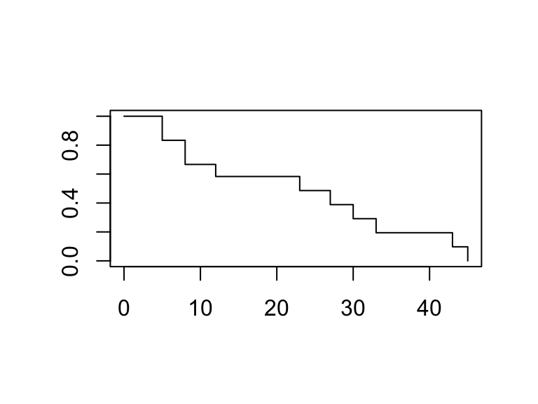
Call: survfit(formula = Surv(time, status) ~ 1, data = dat)
time n.risk n.event survival std.err lower 95% CI upper 95% CI
5 12 2 0.833 0.108 0.647 1.00
8 10 2 0.667 0.136 0.447 0.99
12 8 1 0.583 0.142 0.362 0.94
23 6 1 0.486 0.148 0.268 0.88
27 5 1 0.389 0.147 0.185 0.82
30 4 1 0.292 0.139 0.115 0.74
33 3 1 0.194 0.122 0.057 0.66
43 2 1 0.097 0.092 0.015 0.62
45 1 1 0.000 NaN NA NAsurvminer::ggsurvplot(surv_model, data = dat,
surv.median.line = "hv", conf.int = FALSE)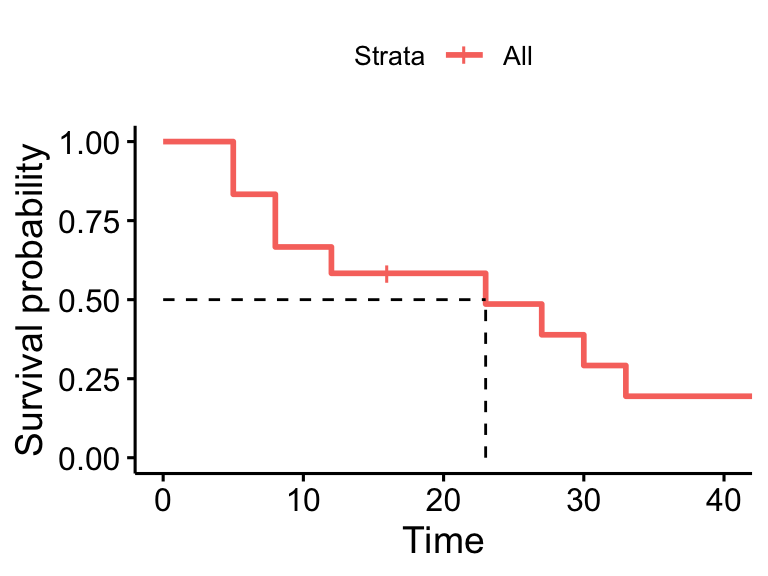
Nelson-Aalen estimator
Cumulative hazard and its estimator
Cumulative hazard: \[ H(t) = \int_0^t h(s)\,ds \]
Nelson-Aalen (NA) estimator of \(H(t)\) using the KM notations (event times \(t_j\), risk set \(n_j\), deaths \(d_j\)): \[ \hat H(t) = \sum_{t_j \le t} \frac{d_j}{n_j}, \qquad n_j>0. \]
A useful companion estimator of survival derived from NA is \[ \hat S_{\mathrm{NA}}(t) = \exp\{-\hat H(t)\}. \] In continuous-time settings with small event-time jumps, \(\hat S_{\mathrm{NA}}(t)\) is often close to the KM curve.
- The variance of \(\hat{H}(t)\) can be obtained as \[\begin{align} \widehat{\text{Var}}\big[\hat{H}(t)\big] &=\sum_{j:\,t_j\leq t} \text{Var}\Big(\frac{d_j}{n_j}\Big) \notag \\ & = \sum_{j:\,t_j\leq t}\Big(\frac{d_j}{n_j}\Big)\Big(1-\frac{d_j}{n_j}\Big)\Big(\frac{1}{n_j}\Big)\notag \\ & = \sum_{j:\,t_j\leq t} \frac{d_j (n_j - d_j)}{n_j^3} \end{align}\]
- Censored sample \[5, 8, 12, 5, 30, 33, 8, 16^+, 23, 27, 43, 45\]
| \(t_j\) | \(n_j\) | \(d_j\) |
|---|---|---|
| 5 | 12 | 2 |
| 8 | 10 | 2 |
| 12 | 8 | 1 |
| 16 | 7 | 0 |
| 23 | 6 | 1 |
| 27 | 5 | 1 |
| 30 | 4 | 1 |
| 33 | 3 | 1 |
| 43 | 2 | 1 |
| 45 | 1 | 1 |
\(\hat{h}_j = P(T = t_j\,\vert\, T\geq t_j) = \frac{d_j}{n_j}\) and \(\hat{H}(t) = \sum_{j:\,t_j\leq t} \hat{h}_j\)
| \(t_j\) | \(n_j\) | \(d_j\) | \(\hat{h}_j\) | \(\hat{H}(t_j)\) |
|---|---|---|---|---|
| 5 | 12 | 2 | 0.167 | 0.167 |
| 8 | 10 | 2 | 0.200 | 0.367 |
| 12 | 8 | 1 | 0.125 | 0.492 |
| 16 | 7 | 0 | 0.000 | 0.492 |
| 23 | 6 | 1 | 0.167 | 0.658 |
| 27 | 5 | 1 | 0.200 | 0.858 |
| 30 | 4 | 1 | 0.250 | 1.108 |
| 33 | 3 | 1 | 0.333 | 1.442 |
| 43 | 2 | 1 | 0.500 | 1.942 |
| 45 | 1 | 1 | 1.000 | 2.942 |
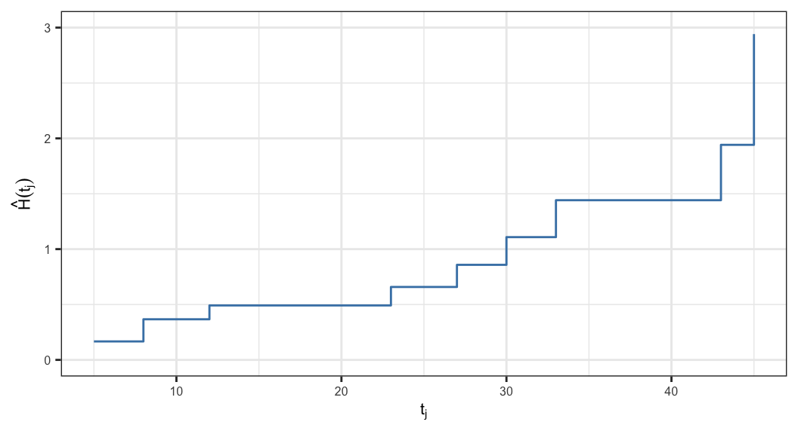
\[{\color{purple}\text{se}(\hat{H}(t)) = \sqrt{\sum_{j:\,t_j\leq t} \frac{d_j (n_j - d_j)}{n_j^3}}}\]
| \(t_j\) | \(n_j\) | \(d_j\) | \(\hat{h}_j\) | \(\hat{H}(t_j)\) | \(se(\hat{H}(t_j))\) |
|---|---|---|---|---|---|
| 5 | 12 | 2 | 0.167 | 0.167 | 0.108 |
| 8 | 10 | 2 | 0.200 | 0.367 | 0.166 |
| 12 | 8 | 1 | 0.125 | 0.492 | 0.203 |
| 16 | 7 | 0 | 0.000 | 0.492 | 0.203 |
| 23 | 6 | 1 | 0.167 | 0.658 | 0.254 |
| 27 | 5 | 1 | 0.200 | 0.858 | 0.310 |
| 30 | 4 | 1 | 0.250 | 1.108 | 0.379 |
| 33 | 3 | 1 | 0.333 | 1.442 | 0.466 |
| 43 | 2 | 1 | 0.500 | 1.942 | 0.585 |
| 45 | 1 | 1 | 1.000 | 2.942 | 0.585 |
CIs for survival probabilities
-
Nonparametric methods can also be used to construct confidence intervals for different lifetime distribution characteristics, such as
Survival probabilities \(S(t)\)
Quantiles \(t_p\)
The methods of constructing confidence intervals are based on the following property of MLE \(\hat{\theta}\) \[ \sqrt{n}(\hat{\theta} - \theta)\sim N(0, \sigma^2)\;\Rightarrow\;(\hat{\theta} - \theta)\sim N\big(0, \text{var}(\hat\theta)\big) \]
Plain Wald CI (using Greenwood)
Let \(\hat S(t^+)\) be the KM estimate and \[\widehat{\mathrm{Var}}\big(\hat S(t^+)\big)=\hat S(t^+)^{2} \sum_{t_j\le t} \frac{d_j}{n_j(n_j-d_j)}\]
Then a \((1-\alpha)100\%\) CI is \[ \hat S(t^+) \, \pm\, z_{1-\alpha/2}\, \sqrt{\widehat{\mathrm{Var}}\big(\hat S(t^+)\big)}. \]
| \(t_j\) | \(n_j\) | \(d_j\) | \(\hat{S}(t_j^+)\) | \(\widehat{\text{Var}}(\hat{S}(t^+))\) |
|---|---|---|---|---|
| 5 | 12 | 2 | 0.833 | 0.012 |
| 8 | 10 | 2 | 0.667 | 0.019 |
| 12 | 8 | 1 | 0.583 | 0.020 |
| 16 | 7 | 0 | 0.583 | 0.020 |
| 23 | 6 | 1 | 0.486 | 0.022 |
| 27 | 5 | 1 | 0.389 | 0.022 |
| 30 | 4 | 1 | 0.292 | 0.019 |
| 33 | 3 | 1 | 0.194 | 0.015 |
| 43 | 2 | 1 | 0.097 | 0.008 |
| 45 | 1 | 1 | 0.000 | NaN |
- 95% confidence interval of \(S(15^+)\)
\[ \begin{aligned} \hat{S}(15^+) \pm z_{.975}\,\hat{\sigma}_s(15^+) & = 0.583 \pm (1.960)(\sqrt{0.020}) \\ & = 0.583 \pm 0.279 \\ & = (0.304, 0.862) \end{aligned} \]
Drawback of Plain CI: for small samples or when \(S(t)\) is near 0 or 1, Wald CIs may exceed \((0,1)\).
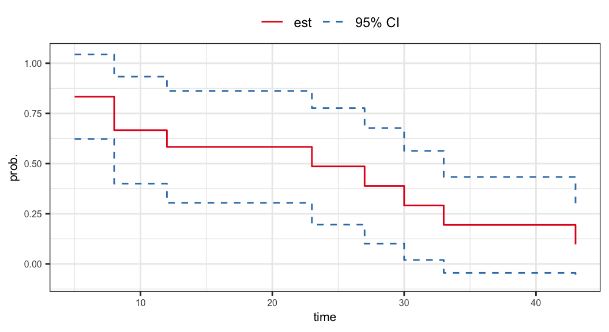
CI via variance-stabilizing transformations
- Let \(\psi(t)=g\big[S(t)\big]\) where \(g\) maps \((0,1)\to\mathbb{R}\).
Common choices (with inverse \(g^{-1})\):
- Log–log: \(g(p)=\log[-\log p], \quad g^{-1}(u)=\exp(-e^{u})\)
- Logit: \(g(p)=\log\big(p/(1-p)\big), \quad g^{-1}(u)=\exp(u)/[1+\exp(u)]\)
- Log: \(g(p)=\log p,\quad g^{-1}(u)=e^{u}\)
Delta method: \[ \widehat{\mathrm{Var}}\big(\hat\psi(t)\big) = \big\{g'\big(\hat S(t)\big)\big\}^2 \, \widehat{\mathrm{Var}}\big(\hat S(t)\big). \]
Then \((1-\alpha)100\%\) CI for \(\psi(t)\): \[\hat\psi(t)\pm z_{1-\alpha/2} \, \sqrt{\widehat{\mathrm{Var}}\big(\hat\psi(t)\big)} \quad \Rightarrow \quad[\psi_L,\, \psi_U]\]
- Finally, \((1-\alpha)100\%\) CI for \(S(t)\) is \(\big[g^{-1}(\psi_L),\, \, g^{-1}(\psi_U)\big]\) that stays inside \((0,1)\). That is,
\[\begin{align*} & \psi_L \leqslant \psi(t)\leqslant \psi_U\\[.25em] & \psi_L \leqslant g\big[{S}(t)\big]\leqslant \psi_U\\[.25em] & g^{-1}\big(\psi_L\big) \leqslant {S}(t)\leqslant g^{-1}\big(\psi_U\big) \end{align*}\]
Example of Log-log CI
-
95% CI of \(\psi(t) = g\big[S(t)\big] = \log\big[-\log\big(S(t)\big)\big]\) is \[\hat{\psi}(t) \pm \hat{\sigma}_{\psi}\,z_{.975}\]
\(\hat{\psi}(t) = \log\big[-\log\big(\hat{S}(t)\big)\big]\)
\(\hat{\sigma}_{\psi}(t) = \sqrt{\bigg[\frac{1}{ \hat{S}(t)\,\log\big(\hat{S}(t)\big)}\bigg]^{2} \,\hat{\sigma}^2_{S}(t)}\)
| \(t_j\) | \(n_j\) | \(d_j\) | \(\hat{S}(t_j^+)\) | \(\widehat{\text{Var}}(\hat{S}(t^+))\) |
|---|---|---|---|---|
| 8 | 10 | 2 | 0.667 | 0.019 |
| 12 | 8 | 1 | 0.583 | 0.020 |
| 16 | 7 | 0 | 0.583 | 0.020 |
\[\begin{aligned} \hat{\psi}(15^+) &= \log\big[-\log\big(\hat{S}(15)\big)\big]=\log\big[-\log\big(0.583\big)\big]= \textcolor{purple}{-0.618} \\[.25em] \hat{\sigma}_{\psi}(15^+) &= \sqrt{\Big[{ \hat{S}(15)\,\log\big(\hat{S}(15)\big)}\Big]^{-2} \,\hat{\sigma}^2_{S}(15)} \\[.25em] & = \sqrt{\Big[{(0.583)\log(0.583)}\Big]^{-2}(0.020)} \\[.25em] & = \textcolor{purple}{0.453}\end{aligned}\]
- 95% CI of \(\psi(15^+) = \log\big[-\log\big(S(15^+)\big)\big]\) is
\[\begin{aligned} \hat{\psi}(15^+) &\pm \hat{\sigma}_{\psi}(15^+)\,z_{.975} \\[.25em] -0.618 &\pm (0.453)(1.960)\\[.25em] -0.618 &\pm 0.887\\[.25em] -1.505 &\leqslant \psi(15^+) \leqslant 0.269 \end{aligned}\]
- 95% CI of \(S(15^+)\) can be obtained as \[\begin{aligned} -1.505 & \leqslant \psi(15^+) \leqslant 0.269 \\[.25em] -1.505 & \leqslant \log\Big(-\log\big[S(15^+)\big]\Big) \leqslant 0.269 \\[.25em] {\color{purple}-e^{0.269}} & \leqslant \log\big[S(15^+)\big] \leqslant {\color{purple}-e^{-1.505}} \\[.25em] \exp\big(-e^{0.269}\big) & \leqslant S(15^+) \leqslant \exp\big(-e^{-1.505}\big) \\[.25em] 0.270 & \leqslant S(15^+) \leqslant 0.801 \\[.25em] \end{aligned}\]
-
95% CI of \(S(15^+)\)
Plain CI \[\begin{align} 0.304 \leqslant S(15^+) \leqslant 0.862 \end{align}\]
Log-log CI \[\begin{align} 0.270 \leqslant S(15^+) \leqslant 0.801 \end{align}\]
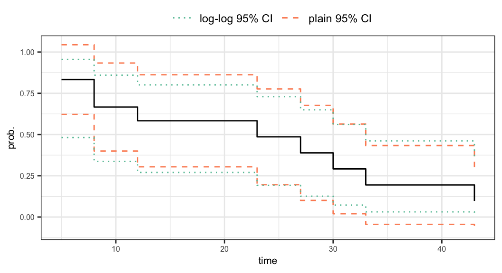
Homework
- Compute the 95% CI for \(S(15^+)\) using
- logit and (ii) log transformations, and compare to the plain and log–log CIs.
Bootstrap CI
The nonparametric bootstrap can be used to approximate the sampling distributions of the pivotal quantities \(Z_1\) and \(Z_2\).
The \((\alpha/2)\)- and \((1-\alpha/2)\)-quantiles of the bootstrap distribution yield a \((1-\alpha)100\%\) confidence interval for \(S(t)\).
Steps for obtaining bootstrap CIs
Let the observed data be \(\{(t_i, \delta_i),\, i=1,\ldots,n\}\).
The Kaplan–Meier estimator \(\hat S(t)\) and its standard error \(\hat\sigma_s(t)\) are treated as MLEs of \(S(t)\) and its SE.Resample:
Draw a bootstrap sample \(\{(t_i^\star, \delta_i^\star),\, i=1,\ldots,n\}\) by sampling with replacement from the observed pairs \(\{(t_i, \delta_i)\}\).Recompute estimates:
For each bootstrap sample, compute the product-limit estimate \(\hat S^\star(t)\) and its SE \(\hat\sigma_s^\star(t)\).Form pivotal statistic:
\[ Z_1^\star = \frac{\hat S^\star(t) - \hat S(t)}{\hat\sigma_s^\star(t)}. \]Repeat Steps 1–3 a large number of times (\(B > 1000\)) to obtain the bootstrap replicates
\[ Z_{1,1}^\star, Z_{1,2}^\star, \ldots, Z_{1,B}^\star. \]
Quantiles of the bootstrap distribution:
Let \(z^\star_{(qB)}\) denote the \((qB)\)th smallest value of \(\{Z_{1,1}^\star,\ldots,Z_{1,B}^\star\}\).
This estimates the \(q\)-quantile of the distribution of \(Z_1\).Bootstrap confidence interval:
The \((q_2 - q_1)100\%\) CI of \(S(t)\) is given by \[ \boxed{ \hat S(t) - z^\star_{(q_2B)}\,\hat\sigma_s(t) < S(t) < \hat S(t) - z^\star_{(q_1B)}\,\hat\sigma_s(t) } \] For a 95% CI, use \(q_2 = 0.975\) and \(q_1 = 0.025\).
Homework
- Obtain a bootstrap confidence interval for \(S(15^+)\) using \(B = 1000\) replications.
- Compare it to the intervals based on \(Z_1\) (plain) and \(Z_2\) (log–log) methods.
Example: Remission data
The following data are on lengths of remission for two groups (placebo and 6-MP) of leukemia patients
Objective was to examine whether the drug 6-MP is more effective than placebo

| \(t_j\) | \(n_j\) | \(d_j\) | \(\hat{S}(t_j^+)\) | SE | lower | upper |
|---|---|---|---|---|---|---|
| 6 | 21 | 3 | 0.857 | 0.076 | 0.707 | 1.000 |
| 7 | 17 | 1 | 0.807 | 0.087 | 0.636 | 0.977 |
| 10 | 15 | 1 | 0.753 | 0.096 | 0.564 | 0.942 |
| 13 | 12 | 1 | 0.690 | 0.107 | 0.481 | 0.900 |
| 16 | 11 | 1 | 0.627 | 0.114 | 0.404 | 0.851 |
| 22 | 7 | 1 | 0.538 | 0.128 | 0.286 | 0.789 |
| 23 | 6 | 1 | 0.448 | 0.135 | 0.184 | 0.712 |
| \(t_j\) | \(n_j\) | \(d_j\) | \(\hat{S}(t_j^+)\) | SE | lower | upper |
|---|---|---|---|---|---|---|
| 1 | 21 | 2 | 0.905 | 0.064 | 0.779 | 1.000 |
| 2 | 19 | 2 | 0.810 | 0.086 | 0.642 | 0.977 |
| 3 | 17 | 1 | 0.762 | 0.093 | 0.580 | 0.944 |
| 4 | 16 | 2 | 0.667 | 0.103 | 0.465 | 0.868 |
| 5 | 14 | 2 | 0.571 | 0.108 | 0.360 | 0.783 |
| 8 | 12 | 4 | 0.381 | 0.106 | 0.173 | 0.589 |
| 11 | 8 | 2 | 0.286 | 0.099 | 0.092 | 0.479 |
| 12 | 6 | 2 | 0.190 | 0.086 | 0.023 | 0.358 |
| 15 | 4 | 1 | 0.143 | 0.076 | 0.000 | 0.293 |
| 17 | 3 | 1 | 0.095 | 0.064 | 0.000 | 0.221 |
| 22 | 2 | 1 | 0.048 | 0.046 | 0.000 | 0.139 |
| 23 | 1 | 1 | 0.000 | NaN | NaN | NaN |
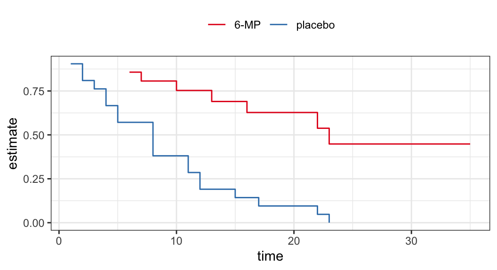
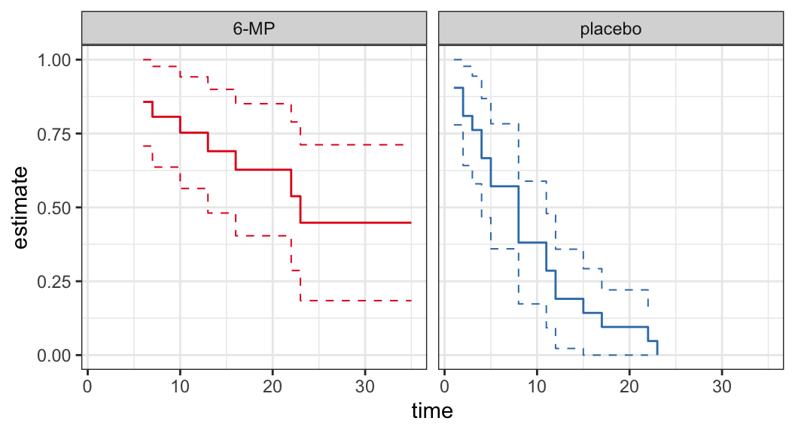
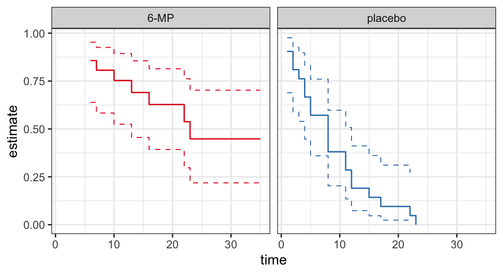
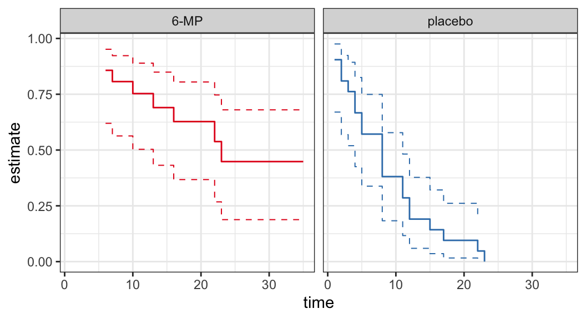
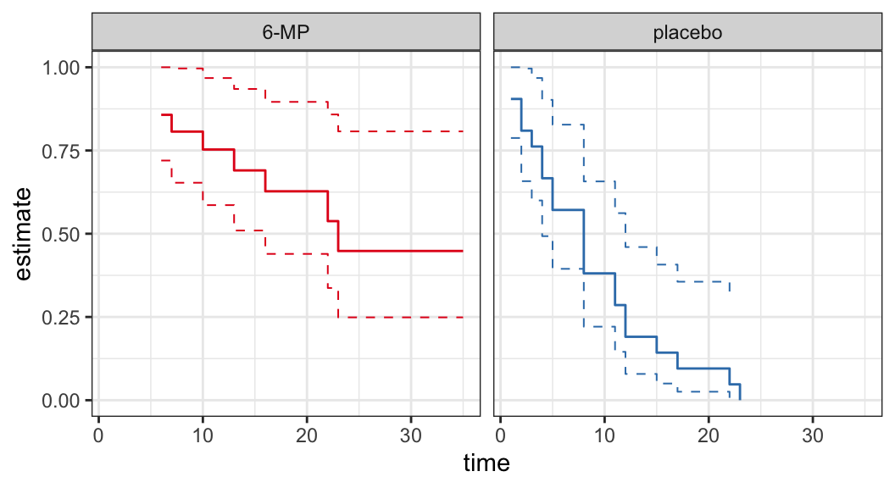
CIs for quantiles
For lifetime distribution, the quantiles \(t_p\) are of more interest than mean of the distribution, e.g., the median \(t_{.50}\) is used as the measure of location for lifetime distribution
Median has some advantages over mean as a measure of location for lifetime distributions
Median always exist (provided \(S(\infty) < .5\)) and it is easier to estimate when data are censored
Estimates of quantiles
Nonparametric estimates of \(t_p\) can be obtained from the PL estimates \(\hat{S}(t)\)
For a step function \(\hat{S}(t)\), the corresponding inverse function \(\hat{S}^{-1}(1-p)\) is not uniquely defined
The estimate \(\hat{t}_p\) could be either an intervals of times (\(t\)’s) or a specific value of times (\(t\)’s) depending on the point at which the line \(\hat{S}(t)=1-p\) intersect the step function \(\hat{S}(t)\) \[\begin{align} {\color{purple} \hat{t}_p = \min\big\{t_i: \hat{S}(t_i) \leqslant 1 - p\big\}} \end{align}\]
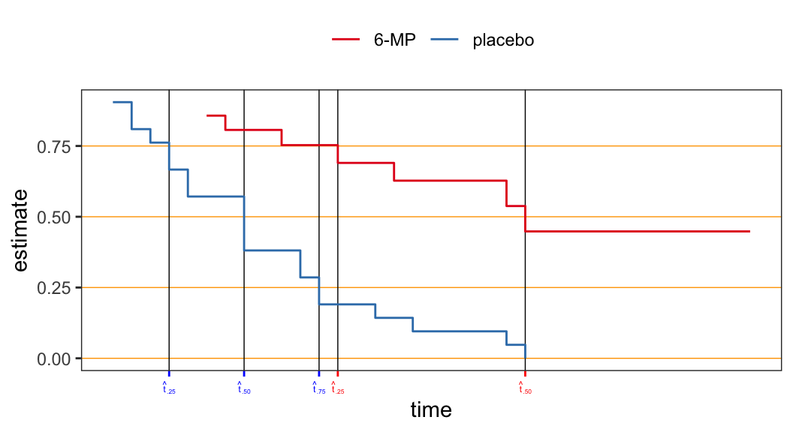
| prob | 6-MP | placebo |
|---|---|---|
| 0.25 | 13 | 4 |
| 0.50 | 23 | 8 |
| 0.75 | NA | 12 |
Confidence intervals of quantiles
- \(100(1-\alpha)\%\) confidence interval of \(t_p\) can be obtained by inverting the corresponding confidence interval of survival function \(S(t)\)
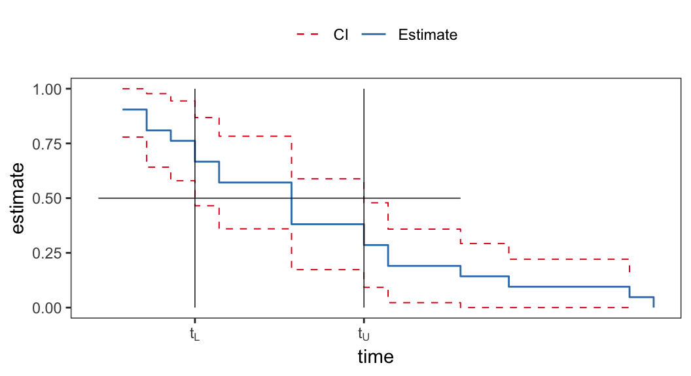
| prob | 6-MP | placebo |
|---|---|---|
| 0.25 | \((6, 23)\) | \((2, 8)\) |
| 0.50 | NA | \((4, 11)\) |
| 0.75 | NA | \((8, 17)\) |
- Confidence intervals for second and third quartiles cannot be estimated from this data set for the “6-MP” group because \(\hat{S}(\infty) <.5\)
3.3 Descriptive and diagnostic plots
Plots of PL \(\big(\hat{S}(t)\big)\) or Nelson-Aalen \(\big(\hat{H}(t)\big)\) estimates can be used to provide good description of univariate lifetime data
These estimates are useful to assess the appropriateness of a parametric model
Plots of survivor functions
Data: \(\{(t_i, \delta_i), i = 1, \ldots, n\}\)
\(\hat{S}(t)\,\rightarrow\) PL estimate of survivor function \(S(t)\)
Assume lifetimes follow a distribution with survivor function \(S(t; \boldsymbol{{\theta}})\) and \(F(t;\boldsymbol{{\theta}})\) is the corresponding distribution function, where \(\boldsymbol{{\theta}}\) is the parameter vector, e.g. for exponential distribution \[ S(t; \theta) = e^{-t/\theta}\;\;\;\;\;\;\; t\geqslant 0, \;\; \theta > 0 \]
- Let \({{\hat{\symbf\theta}}}\) is an estimate of \(\symbf{{\theta}}\) and \(S(t; {{\hat{\symbf\theta}}})\) is the estimate of survivor function \(S(t; {\symbf{{\theta}}})\), e.g. for exponential distribution \[ S(t; \hat{\theta}) = e^{-t/\hat{\theta}} \]
If the model assumption (i.e. lifetimes follow a distribution with survivor function \(S(t; \symbf{\theta})\)) is appropriate then \(S(t; \hat{\symbf\theta})\) should not be very far from \(\hat{S}(t)\)
A comparison between \(S(t; \hat{\symbf{\theta}})\) and \(\hat{S}(t)\) can be used as a model assessment tool
A plot of \(S(t; \hat{\symbf{\theta}})\) and \(\hat{S}(t)\) on the same graph can be used to compare graphically
Example 3.3.1: Ball bearing data
| 17.88 | 41.52 | 48.40 | 54.12 | 68.64 | 84.12 | 105.12 | 128.04 |
| 28.92 | 42.12 | 51.84 | 55.56 | 68.64 | 93.12 | 105.84 | 173.40 |
| 33.00 | 45.60 | 51.96 | 67.80 | 68.88 | 98.64 | 127.92 | NA |
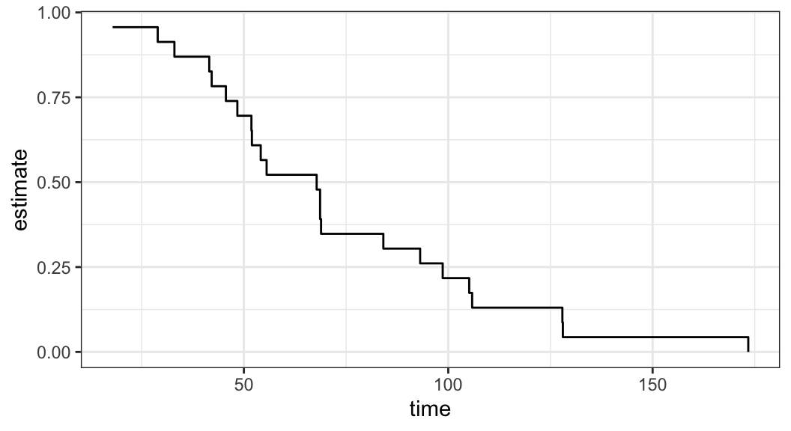
-
Assume Weibull and log-normal models for analyzing ball bearing data and want to assess which of these two models is appropriate for the data
Weibull model \[ S(t; \alpha, \beta) = e^{-(t/\alpha)^\beta}\;\;\;\;t\geqslant 0, \alpha >0, \beta >0 \]
Log-normal model \[ S(t; \mu, \sigma) = 1 - \Phi\bigg(\frac{\log t - \mu}{\sigma}\bigg) \;\;\;\;t\geqslant 0, -\infty<\mu<\infty, \sigma > 0 \]
Estimated survivor functions
Weibull model \[ S(t; \hat\alpha, \hat\beta) = e^{-(t/81.87)^{2.10}} \]
Log-normal model \[ S(t; \hat\mu, \hat\sigma) = 1 - \Phi\bigg(\frac{\log t - 4.15}{0.52}\bigg) \]
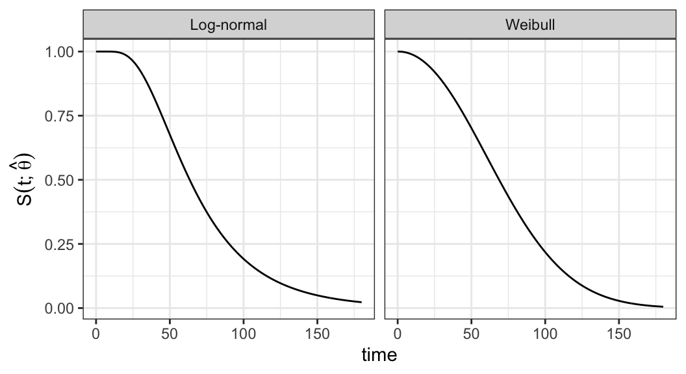
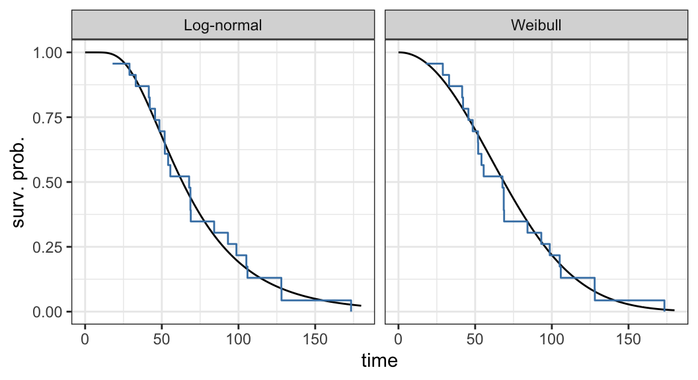
Figure 3.2 shows that there is a good agreement between nonparametric PL estimates \(\hat{S}(t)\) and both the Weibull and log-normal models
Either Weibull or log-normal can be assumed to analyze ball bearing data
Probability plots
Let \(t_1 <\cdots < t_k\) are \(k\) distinct failure times, and \(S(t_j; \symbf{\hat{\theta}})\) and \(\hat{S}(t_j)\) are corresponding parametric and non-parametric estimates of survivor function
Probability-probability (P-P) plot is defined as the scatter plot of \[\big\{S(t_j; \symbf{\hat{\theta}}), \;\hat{S}(t_j)\big\}, \;\;j = 1, \ldots, k\]
If the assumed parametric model \(S(t; \symbf{\theta})\) is appropriate then all the points in the resulting scatter plot should lie around a straight line with slope one
| time | PL | Weibull | Log-normal |
|---|---|---|---|
| 17.88 | 0.978 | 0.960 | 0.992 |
| 28.92 | 0.935 | 0.894 | 0.934 |
| 33.00 | 0.891 | 0.862 | 0.895 |
| 41.52 | 0.848 | 0.787 | 0.792 |
| 42.12 | 0.804 | 0.781 | 0.784 |
| 45.60 | 0.761 | 0.747 | 0.737 |
| 48.40 | 0.717 | 0.718 | 0.698 |
| 51.84 | 0.674 | 0.682 | 0.651 |
| 51.96 | 0.630 | 0.681 | 0.649 |
| 54.12 | 0.587 | 0.658 | 0.620 |
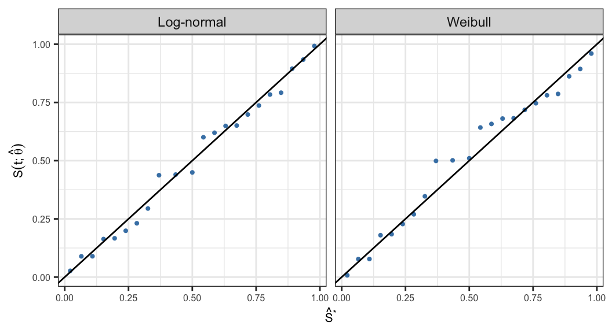
Quantile-Quantile (Q-Q) plot
Quantile-quantile (Q-Q) plot compares observed quantiles and the corresponding quantiles estimated from the assumed parametric model \(S(t; \symbf{\theta})\)
Observed quantiles are observed distinct failure time \(t_j\) corresponding to the PL estimates \(\hat{S}_j\)
\(t(\hat{S}_j, {\symbf{\theta}})\) are the quantiles corresponding to \(\hat{S}_j\) obtained from the model \(S(t; \symbf{\theta})\) \[ t(p, \symbf{\theta}) = \begin{cases} \alpha \big[-\log(1-p)\big]^{1/\beta}& \text{Weibull}\\ \exp\big[\mu + \sigma\Phi^{-1}(p)\big] &\text{Log-normal} \end{cases} \]
Q-Q plot is defined as the scatter plot of \(t(\hat{S}_j, \hat{\symbf{\theta}})\) versus \(t_j\)
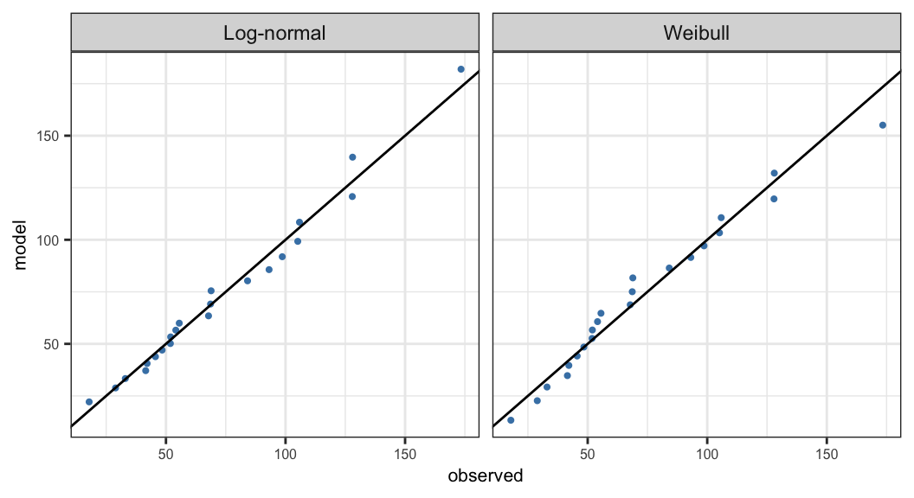
Linearization method
This method is based on linearizing the survivor or distribution function of the assumed parametric model
There exists functions \(g_1(\cdot)\) and \(g_2(\cdot)\) such that \(g_1\big[S(t; \symbf{\theta})\big]\) is a linear function of \(g_2(t)\)
If the parametric model \(S(t; \symbf{\theta})]\) is appropriate, the plot of \(g_1\big[\hat{S}(t)\big]\) versus \(g_2(t)\) should be roughly linear, where \(\hat{S}(t)\) is the PL estimate
This method does not require to estimate the parameter \(\symbf{\theta}\)
-
Exponential distribution \[\begin{align} S(t; \alpha) = e^{-t/\alpha} \;\Rightarrow\; \log\big[S(t;\alpha\big] = -t/\alpha \end{align}\]
\(\log\big[S(t; \alpha)\big]\) is a linear function of \(t\), so a plot of \(\log \hat{S}(t)\) versus \(t\) should be linear through the origin if the exponential model is appropriate
A graphical estimate of \(\alpha\) can be obtained when the plot is roughly linear by fitting a straight line through the points
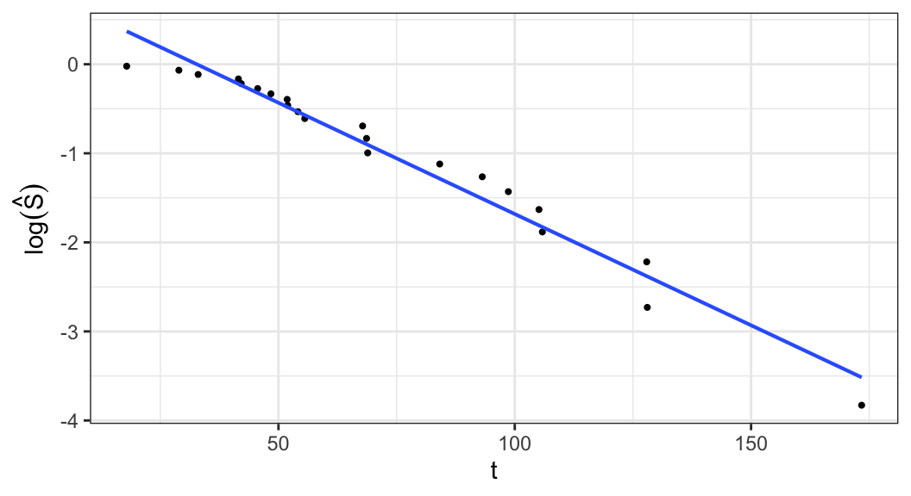
-
Weibull distribution \[\begin{align} S(t; \alpha, \beta) &= e^{-(t/\alpha)^\beta} \notag \\ \Rightarrow \; \log\big[-\log S(t;\alpha, \beta)\big] &= \beta\log t - \beta\log \alpha \end{align}\]
A plot of \(\log\big[-\log\hat{S}(t)\big]\) versus \(\log t\) should roughly linear if a Weibull model is appropriate
When the plot is approximately linear, graphical estimates of \(\alpha\) and \(\beta\) can be obtained by intercept and slope of the fitted straight line through the points
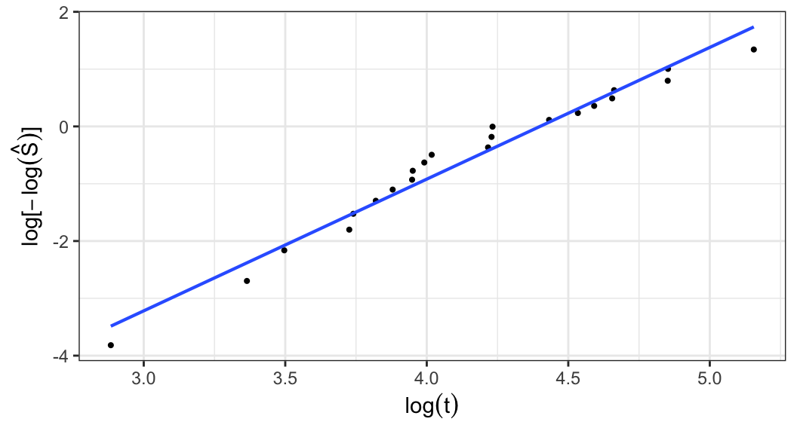
Location-scale family
In general, linearization method of assessing the appropriateness of the assumed parametric model can be defined for location-scale family of models
Let transformed lifetime \(Y = g(T)\) has a location-scale distribution, e.g. \(g(\cdot)=\log(\cdot)\)
- Survivor function of \(Y\) can be defined as \[\begin{align}
Pr(Y \geqslant y) & = Pr\bigg(\frac{Y-u}{b}\geqslant \frac{y-u}{b}\bigg)\notag\\
& = Pr\bigg(Z \geqslant \frac{y- u}{b}\bigg) = S_0\bigg(\frac{y-u}{b}\bigg)\notag \\
& = Pr(T\geqslant t) = S(t)
\end{align}\]
- \(t = g^{-1}(y)\), \(-\infty <u<\infty\), \(b>0\)
It can be shown that \[ \begin{aligned} S_0\bigg(\frac{y-u}{b}\bigg) &= S(t) \\ \Rightarrow\;S_0^{-1}\Big[S(t)\Big] &= \frac{y}{b} -\frac{u}{b} \end{aligned} \] is a linear of \(y=g(t)\)
A plot of \(S_0^{-1}\big[\hat{S}(t)\big]\) versus \(g(t)\) should be roughly linear if the assumed family of models is appropriate.
- Expressions of \(S_0(\cdot)\) and \(S_0^{-1}(\cdot)\) for log-location-scale family of models \[ \begin{aligned} S_0(z) &= \begin{cases} \exp(-e^z) &\text{Extreme value}\\ (1 + e^z)^{-1} &\text{Logistic} \\ 1 - \Phi(z) & \text{Normal} \end{cases} \\[.5em] S_0^{-1}(p) &= \begin{cases} \log\big(-\log(p)\big) &\text{Extreme value}\\ \log \frac{1-p}{p} &\text{Logistic} \\ \Phi^{-1}(1-p) & \text{Normal} \end{cases} \end{aligned} \]
- For all these three distributions, \(y=g(t)=\log(t)\)
- In general, for distinct failure times, a plot of points \[ (\log(t_j), S_0^{-1}(\hat{S}_j)), \;j=1, \ldots, k \] can be used to assess whether the assumed location-scale model is appropriate
Graphical estimates of \(u\) and \(b\) can be obtained from the lines fitted to the points, where \(b^{-1}\) and \(u\) are estimated by the slope and \(\log(t)\)-intercept, respectively
Graphical estimates can be used as initial values of the optimization routines that are used for estimating model parameters
Since these plots are subject to sampling variations, these are often used for informal model assessment
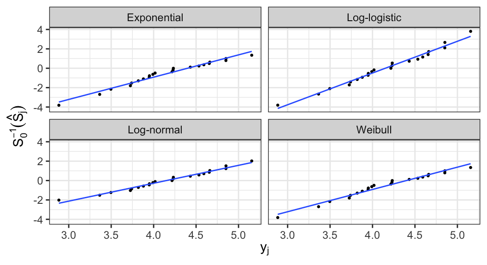
Hazard plots
-
The plotting procedures described for survivor functions \(S(t)\) can also be described for cumulative hazards function \(H(t)\)
Survivor function of Weibull distribution \[ \begin{aligned} S(t; \alpha, \beta) &= e^{-(t/\alpha)^{\beta}} \\[.25em] \;\Rightarrow\; \log[-\log S(t;\alpha, \beta)] &= \beta\log(t) - \beta\log(\alpha) \end{aligned} \]
Cumulative hazard function of Weibull distribution \[ \begin{aligned} H(t; \alpha, \beta) & = \Big(\frac{t}{\alpha}\Big)^\beta \\[.25em] \log H(t; \alpha, \beta) & = \beta \log(t) - \beta\log(\alpha) \end{aligned} \]
-
An alternative of plotting \(\log[-\log \hat{S}(t)]\) versus \(\log(t)\) would be to plot \(\log \hat{H}(t)\) versus \(\log(t)\) can be used to assess the appropriateness of the Weibull model for the data at hand
\(\hat{S}(t)\;\rightarrow\) PL estimate
\(\hat{H}(t)\;\rightarrow\) Nelson-Aalen estimate
The plots based on survivor function and cumulative hazard function could differ slightly, specially for a large \(t\), because \(-\log \hat{S}(t)\neq \hat{H}(t)\) for discrete data
References
Kaplan, Edward L, and Paul Meier. 1958. “Nonparametric Estimation from Incomplete Observations.” Journal of the American Statistical Association 53 (282): 457–81.